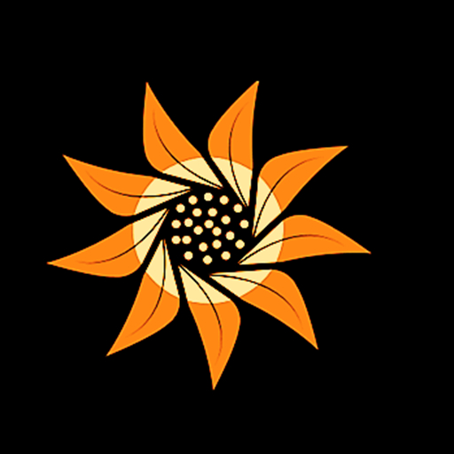
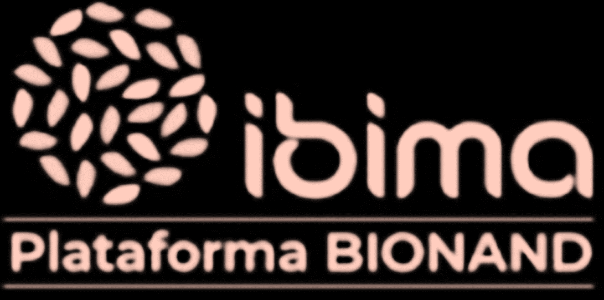

Web de Innovación Docente en Nutrición Basada en la Gamificación
Esta web se ha creado dentro del marco de prácticas tuteladas establecidas entre Grupo de endocrinología A02 (IBIMA PLATAFORMA BIONAND) y I.E.S. Pablo Picasso
Investigador Principal:
Daniel Hinojosa Nogueira
Investigadores Colaboradores:
Isabel Moreno Indias
Alba Subiri Berdugo
Cristina María Díaz Perdigones
María José García López
Tutoras Académicas:
Blanca María Bautista Pérez
María Reyes López Pérez
Alumno de FP DUAL de DAM y desarrollador:
David Flores Gutiérrez
